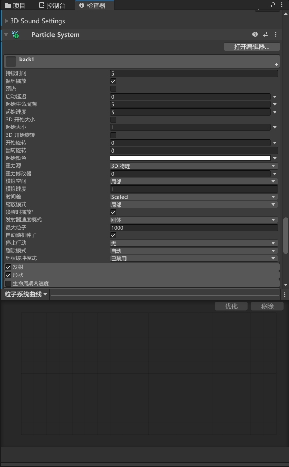
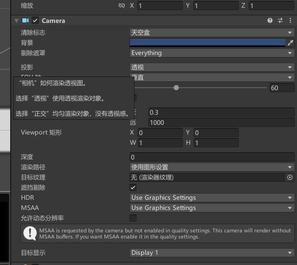
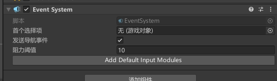

特效组件

Particle System
用于创建和控制粒子效果。例如火花、烟雾、水滴等，可以用来增强游戏的视觉效果和氛围。
Particle System包含多个参数，例如粒子的形状、大小、速度、颜色等，可以用来调整粒子效果的外观和行为。同时，还支持多种粒子发射方式，例如喷射、爆炸、旋转等，可以让粒子效果更加生动、多样。
使用Particle System可以在游戏中创建各种粒子效果，例如火焰、烟雾、雨、雪等。这些效果可以用来增加游戏的视觉效果，增强游戏的氛围。同时，还可以用来表示游戏中的事件，例如爆炸、冲击等，让玩家更加直观地感受游戏的动态变化。
Visual Effect
用于创建和控制各种视觉效果。Visual Effect使用基于节点的图形编辑器，可以用来创建复杂的视觉效果，例如火焰、水、云等。
Visual Effect包含多个节点，每个节点代表一个图形特效。节点可以用来控制特效的外观、行为和运动方式。Visual Effect还支持多种渲染技术，例如体积渲染、屏幕空间反射等，可以用来增强特效的真实感和逼真度。
使用Visual Effect可以创建各种高级的视觉效果，例如火焰、水、云、电等。这些效果可以用来增加游戏的视觉效果和氛围，提高游戏的品质和体验。同时，还可以用来表示游戏中的事件，例如魔法攻击、技能释放等，让玩家更加直观地感受游戏的动态变化。
Trail Renderer
用于创建和控制轨迹效果。轨迹效果是指物体在移动过程中留下的痕迹，例如火箭尾迹、手指滑动的轨迹等。
Trail Renderer可以将物体的移动轨迹以一定的精度绘制出来，并用材质渲染出来。它包含多个参数，例如宽度、颜色、持续时间等，可以用来调整轨迹效果的外观和行为。
Line Renderer
用于创建和控制线条效果。线条效果是指一些简单的、连续的、直线或曲线形状的图形元素，例如绘画、图表、游戏中的路径等。
Line Renderer可以将一组点连接起来，以一定的精度绘制出线条，可以用材质渲染出来。它包含多个参数，例如宽度、颜色、连接方式等，可以用来调整线条效果的外观和行为。
Projector
用于在场景中投影纹理。它可以将一个纹理投影到场景中的任何一个物体上，以模拟阴影、反射、环境光、景深等效果。
Projector可以设置投影的纹理、角度、位置、大小、透明度等参数。它也可以用于动态投影，例如在游戏中实时投射玩家的角色影像。
Lens Flare
用于在游戏中模拟相机镜头中的Lens Flare效果。
Lens Flare可以设置光晕的类型、大小、亮度、色彩、位置等参数。它可以用来模拟太阳、月亮、灯光等光源的光晕效果。
Particle System Force Field
它可以在场景中创建一个力场，通过吸引或排斥粒子来实现各种效果。使用Particle System Force Field可以创建各种复杂的粒子效果，如火焰、水流、爆炸等。
Particle System Force Field提供了许多属性和方法，如力场类型、力度、半径、形状等，使开发人员可以轻松地创建和管理粒子效果。它还可以与其他Unity组件配合使用，如Particle System、Collider、Rigidbody等。
使用Particle System Force Field可以创建各种复杂的粒子效果，如火焰的向上喷射、水流的流动和旋转、爆炸的冲击波和碎片等。它可以帮助开发人员提高游戏的视觉效果和玩家的体验，使游戏更加有趣和吸引人。
Wind Zone
它可以在场景中创建一个风区域，通过改变风的方向、速度和扰动等参数，来模拟各种不同的风效果。
Wind Zone提供了许多属性和方法，如风的方向、风的速度、风的扰动、风的最大距离等，使开发人员可以轻松地创建和管理风效果。它还可以与其他Unity组件配合使用，如Rigidbody、Cloth、Particle System等。
渲染组件

Camera
用于控制场景中相机的视角和投影方式。它可以设置相机的位置、旋转、视野、投影方式等参数。
在游戏中，相机是非常重要的，因为它可以控制玩家的视角，让玩家可以观察和控制游戏中的场景和角色。相机可以设置为透视投影或正交投影，透视投影可以模拟真实的视野效果，而正交投影则可以保证物体的大小比例不变。
相机还可以设置多个，用于创建多个视角或场景切换时的过渡效果。相机也可以设置跟随物体移动，以实现玩家的跟随视角。
使用相机可以控制游戏中的视角和投影方式，让玩家可以更加方便地观察和控制游戏中的场景和角色。相机还可以用于实现各种过渡效果，例如场景切换、动画过渡等，增强游戏的视觉效果和体验。
Light
用于在场景中创建光源。它可以设置光源的颜色、强度、类型、范围等参数。
在游戏中，光源是非常重要的，因为它可以控制场景中的光照效果和阴影效果，增强游戏的真实感和逼真度。常用的光源类型有点光源、聚光灯和方向光源。点光源可以模拟灯泡等局部光源，聚光灯可以模拟手电筒等局部聚焦光源，方向光源可以模拟太阳等全局光源。
Occlusion Area
用于创建遮挡区域。它可以用于优化游戏的性能，减少不必要的渲染工作量。
在游戏中，一些物体可能处于不可见的区域，例如在角落里、在墙后面等。如果这些物体被渲染，会浪费大量的计算资源。为了解决这个问题，可以使用遮挡区域来剔除这些不可见的物体。
Occlusion Area可以在场景中创建一个遮挡区域，用于剔除不可见的物体。它可以设置遮挡区域的大小、形状、位置等参数。在运行时，遮挡区域会根据玩家的视角来判断哪些物体处于不可见的区域，然后将这些物体从渲染列表中剔除，从而减少不必要的渲染工作量。
使用Occlusion Area可以优化游戏的性能，减少不必要的渲染工作量。它可以用于各种游戏场景，例如室内场景、战斗场景等，让游戏更加流畅和稳定。
Occlusion Portal
用于创建遮挡门。一些区域可能会有多个出入口或者门，开门时渲染，关门时剔除。
Canvas Renderer
用于将UI元素渲染到屏幕上。它可以用于创建各种UI元素，例如按钮、文本框、图片等。
在游戏中，UI元素通常不是3D对象，而是2D平面。为了将这些UI元素渲染到屏幕上，需要使用Canvas Renderer组件。Canvas Renderer可以将UI元素转换成屏幕上的像素，然后将其显示出来。
Sprite Renderer
用于将2D精灵渲染到屏幕上。它可以用于创建2D游戏中的角色、背景、道具等元素。
在游戏中，2D精灵通常是由一张或多张纹理组成的。为了将这些2D精灵渲染到屏幕上，需要使用Sprite Renderer组件。Sprite Renderer可以将2D精灵转换成屏幕上的像素，然后将其显示出来。
Sorting Group
用于控制2D精灵的渲染顺序。它可以用于解决2D精灵渲染顺序冲突的问题，使得2D精灵可以按照指定的顺序渲染，不会出现遮挡或者错位的情况。
在游戏中，如果多个2D精灵处于同一位置或者有交叉的部分，它们的渲染顺序会发生冲突，导致某些2D精灵被遮挡或者错位。为了解决这个问题，可以使用Sorting Group组件来控制2D精灵的渲染顺序。
Skybox
用于创建游戏场景的天空盒。它可以用于创建各种不同的天空效果，例如蓝天白云、夜晚星空、日落黄昏等。
在游戏中，天空盒是一个用于渲染天空的立方体纹理。天空盒通常包括六个面，分别代表天空的前后左右上下六个方向。为了将天空盒渲染到游戏场景中，需要使用Skybox组件。
Streaming Controller
用于控制游戏资源的动态加载和卸载。它可以用于优化游戏的性能，减少游戏的加载时间和内存占用。
在游戏中，资源的加载和卸载是一个非常重要的问题。如果所有的资源都一次性加载到内存中，会导致游戏的加载时间和内存占用非常高，影响游戏的性能。为了解决这个问题，可以使用Streaming Controller组件。
Tilemap组件
Tilemap
用于创建2D游戏场景中的地图。它可以用于创建各种不同的地图，例如平面地图、迷宫地图、战斗地图等。
在2D游戏中，地图是一个非常重要的元素。为了创建地图，需要使用Tilemap组件。Tilemap可以将大量的小块（Tile）组合在一起，形成复杂的地图。
Tilemap可以设置Tile的材质、颜色、碰撞等属性。它还可以设置Tile的位置、旋转、缩放等变换，用于调整Tile的效果。在运行时，Tilemap会将所有的Tile渲染到游戏场景中，让玩家可以感受到真实的地图效果。
使用Tilemap可以创建各种不同的地图，并将其渲染到游戏场景中。它可以用于各种2D游戏场景，例如平面地图、迷宫地图、战斗地图等，让游戏更加丰富和有趣。
Tilemap Renderer
用于渲染2D游戏场景中的Tilemap。它可以用于将Tilemap渲染到游戏场景中，让玩家可以看到真实的地图效果。
事件组件

Event System
用于处理用户交互事件。它可以用于捕捉用户的输入、点击、拖拽等事件，并将其发送给合适的游戏对象进行处理。
在Unity中，用户交互事件是一个非常重要的元素。为了处理用户交互事件，需要使用Event System组件。Event System组件会捕捉所有的用户交互事件，并将它们发送给游戏对象进行处理。
Event System组件可以设置事件的优先级、事件的触发方式、事件的响应对象等属性，用于调整事件的处理方式。它还支持多个Event System的层叠使用，以处理游戏中多种不同的用户交互事件。
使用Event System可以处理用户交互事件，例如鼠标点击、键盘输入、触摸屏幕等，以实现游戏的交互性。它可以用于各种游戏场景，例如角色扮演游戏、平台游戏、策略游戏等，让游戏更加丰富和有趣。
Event Trigger
用于响应用户在UI元素上的交互事件。它可以用于捕捉用户的点击、拖拽、鼠标悬停等事件，并执行相应的操作。
在Unity中，UI元素的交互事件是一个非常重要的元素。为了响应UI元素的交互事件，需要使用Event Trigger组件。Event Trigger组件可以向UI元素添加多个事件处理程序，用于响应用户的不同交互事件。
Standalone Input Module
用于处理鼠标、键盘等输入设备的输入事件。它可以用于捕捉用户在游戏中的输入事件，并将其转换成Unity中的事件系统。
在Unity中，用户输入是一个非常重要的元素，用于控制游戏中的角色、物体等。为了处理用户的输入事件，需要使用Standalone Input Module模块。Standalone Input Module模块可以捕捉鼠标、键盘等输入设备的输入事件，并将其转换成Unity中的事件系统。